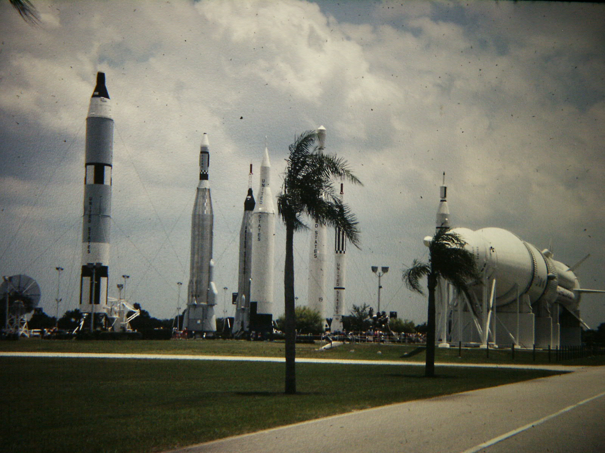

7, 6, 5, “Main engine start,” 4, 3, “Engines firing,” 2, 1, “We have lift-off.” The ground beneath you trembles as the 20-story-tall rocket booster ignites, heading toward the Moon. It’s the first test of a brand-new style of rocket, and there’s a 70% chance that instead of escaping the atmosphere, it comes back, ready to not stick the landing. Good thing it’s near the sea instead of crashing into downtown Chicago—one of the many reasons rocket launches are near the coast and not inland.
Rockets are essentially giant, controlled explosions, and failures can be catastrophic. If even a single screw isn’t tightened properly, the consequences can be extreme. Launching rockets near the coast increases the likelihood that, if a rocket does fail, it will fall into the ocean instead of onto buildings. Even if it takes off successfully, the boosters that detach plummet back to Earth, and it's much safer for them to land in water than on land.
The Earth spins from west to east, and if a rocket launches eastward, the Earth gives it a free speed boost, making its trip more fuel-efficient. Instead of the rocket fighting the Earth to gain speed and escape, the Earth actually helps. Launch sites such as Cape Canaveral or Kourou take this concept to the extreme. They are located near the equator, where the Earth spins the fastest (around 1,037 miles per hour), giving them the greatest jump-start.
If the launch is near the ocean, the rocket can follow this trajectory for the longest amount of time without risking anyone's life. All these factors increase safety, decrease fuel use, and reduce cost. Not only that, for rockets carrying a high-mass payload, the increased efficiency isn’t just a nice thing to have — it’s a necessity.
Spaceports are enormous; the average size of one in the United States is 18,000 acres. This size is necessary for expansion as the number of space missions increases. Since the mid-1970s, the number of annual rocket launches had been decreasing, reaching all-time lows in the early 2000s. But since then, it's been on the rise, and since 2020, the number has been increasing exponentially. Ports near the coast have a lot of room to expand, making the process easier.
The Kennedy Space Center in Merritt Island, Florida, is one of the largest spaceports not only in the U.S. but in the world. It measures a whopping 140,000 acres, or 6.1 billion square feet. When it was first built, it was only 439,446 square feet. That’s already a lot, but it goes to show how much room these ports need and how fast they grow. At the rate annual launches have been increasing, I wouldn’t be surprised to see it reach 10 billion square feet before 2040.